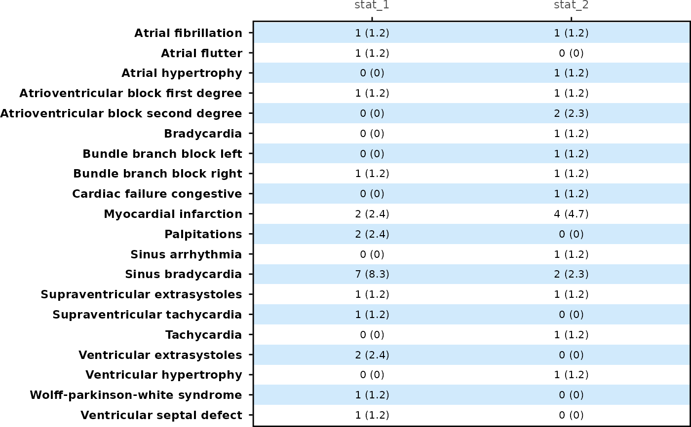

Creates a table panel ggplot2 object for rainfall or forest plot.
Usage
table_panel(
tbl,
y_var,
x_label = NULL,
text_color = NULL,
text_size = 8,
text_format_by = "column",
background_color = c("#69B8F7", "#FFFFFF"),
theme = theme_panel(show_ticks = TRUE, show_text = TRUE),
background_alpha = 0.3
)Arguments
- tbl
A data frame to be displayed in this table.
- y_var
A string of a variable name from
tblfor the y axis variable.- x_label
Labels displayed on the top of table for each column of table. Default is
NULL, variable name will display as label.- text_color
Defines colors to display each treatment group.
- text_size
Numeric font size for data on each column. Default is 8 for each column.
- text_format_by
An option for formatting a data by columns or rows. Default is
"column"and text color will be varied by column. Iftext_format_by = "row", then text color will be varied by row. Iftext_format_by = "group", then text color will be varied by treatment group.- background_color
Color for the plot background. Default is
c("#69B8F7", "#FFFFFF")which are pastel blue and white. The value of this argument will be the input value for thebackground_colorargument inbackground_panel().- theme
Controls display of y axis text, ticks and plot margin. By default,
theme_panel(show_text = TRUE, show_ticks = TRUE)is used. Users are suggested to usetheme_panel().- background_alpha
Opacity of the background. Default is 0.3. The value of this argument will be the input value for the
background_alphaargument inbackground_panel().
Examples
forestly_adsl$TRTA <- factor(
forestly_adsl$TRT01A,
levels = c("Xanomeline Low Dose", "Placebo"),
labels = c("Low Dose", "Placebo")
)
forestly_adae$TRTA <- factor(
forestly_adae$TRTA,
levels = c("Xanomeline Low Dose", "Placebo"),
labels = c("Low Dose", "Placebo")
)
meta <- meta_forestly(
dataset_adsl = forestly_adsl,
dataset_adae = forestly_adae,
population_term = "apat",
observation_term = "wk12",
parameter_term = "any;rel;ser"
) |>
prepare_ae_forestly() |>
format_ae_forestly()
meta_any <- meta$tbl[1:20, ] |> dplyr::filter(parameter == "any")
meta_any |>
dplyr::select(name, diff_1, lower_1, upper_1) |>
table_panel(y_var = "name")
